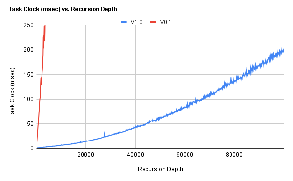
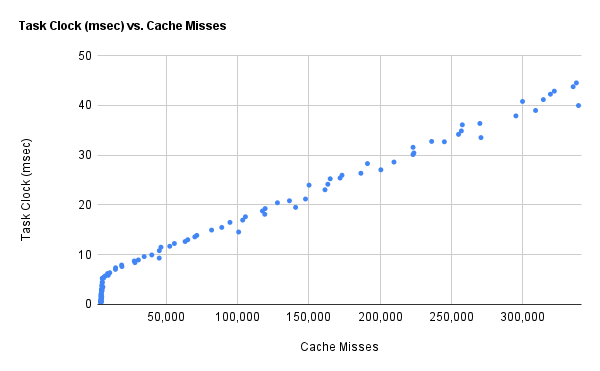

A temporary unified development log/documentation until I find the time to create a proper structure/website.
This is a project I'm doing as part of a research internship under Prof. Rahul Gopinath at the University of Sydney. Note that the start of this internship coincided with the start of my experience with programming in C, so the reader will kindly excuse my earlier code samples.
Fuzzing at its simplest is essentially brute-force input testing; throwing a bunch of random data at a utility and seeing how it responds - specifically, seeing how and when it breaks. Fuzzing like this can be rather dumb, though. For a program with any sort of expectation as to the type of input it gets, a vast majority of fuzz is just going to give us an invalid input error - not very useful when it makes up
This is where grammars come into play. A grammar defines a language, and with reference to a grammar, a fuzzer can generate random input that is valid in the language defined by the grammar. While hardly the last step in achieving maximum penetration, it is an important step, and will be the focus of this project.
A grammar consists of definitions, which in turn consist of rules. For a simple example, consider a grammar for the language <number>. The definition for number contains two rules:
<digit><digit><number>This simply means that a number is defined as either a digit, or a recursively defined sequence of digits. Tokens that have a definition are called non-terminal (eg. <token>), and tokens that are their own literal representation are called terminal (eg. token).
You'll notice that a <digit> is also considered distinct symbols, and in turn has its own set of rues, like so:
012...and so on.
The current assignment involves the creation of a simple depth-limited grammar fuzzer that can be called reasonably performant. This task might be divided into two equally important sub-tasks:
I've got two initial requirements for myself to begin with.
Although it’s probably much easier (and to be honest, cleaner) to write a recursive fuzzer at this stage, I want to start out iterative, for two reasons. Firstly, because I've no idea about the depth to which the fuzzer ought to be performant, so I'm just assuming an arbitrarily large number, which disqualifies a recursive solution. Secondly, because I've not the knowledge regarding the nuances of performance-optimized C code, so I'm just riding off conventional wisdom, ie. "iteration fast recursion slow(er)".
The second requirement is that I implement a depth-limiting mechanism, ie. the maximum recursion depth of the fuzzer for recursive definitions (as seen in <number>) by using min_depth and max_depth parameters. Again, easier to implement in a recursive variant, but I believe I’ve an idea.
Version code: [V0.0]
I’ve created the base for what what will become the fuzzer in coming iterations [gist]. At this point, the code is fully “functional”, but that’s generous. Rather heavy use of pointers doesn’t seem quite right, given how convoluted some function definitions, return types in particular, have become (what even is char *(*getopt(struct g_entry grammar[], char key[]))[]). Performance is abysmal - the program outright crashes the IDE at min_depth = 20.
struct g_entry grammar[GRAMSIZE] = {
(struct g_entry { .key=STARTKEY, .rcrsv=0, .optcnt=1, .options={
{ "~phn" }
} },
(struct g_entry) { .key="~phn", .rcrsv=0, .optcnt=2, .options={
{ "~arc", " ", "~@num", "-", "~@num" },
{ "~@num", "-", "~@num" }
} },
(struct g_entry) { .key="~arc", .rcrsv=0, .optcnt=1, .options={
{ "(+", "~dgt", "~dgt", ")" }
} },
(struct g_entry) { .key="~@num", .rcrsv=1, .optcnt=2, .options={
{ "~dgt" }, { "~@num", "~dgt" }
} },
(struct g_entry) { .key="~dgt", .rcrsv=0, .optcnt=10, .options={
{ "0" }, { "1" }, { "2" }, { "3" }, { "4" },
{ "5" }, { "6" }, { "7" }, { "8" }, { "9" }
} }
};
The grammar is constructed as seen above 1, and is comprised of the following key components:
grammar: the grammar itself, a collection of g_entry structures
struct g_entry: a structure defining a grammar entry (a.k.a definition)
.key: a unique identifier (string).rcsv and .optcnt: meta-data regarding the entry’s recursive nature and the number of unique options (a.k.a rules) the entry contains.options: an array which contains options, ie. arrays of tokens (a.k.a rules) represented by strings.The fuzzer algorithm, or at least how it plays out in my head, is here described. The way it’s actually implemented in the code at the moment is far too convoluted to make it worth going into any details of here - the reader is free to expose themselves to the source at their own leisure.
The fuzzer declares:
start token)The fuzzer extracts the first token in the stack, and writes the rest of the stack to a buffer
Depending on the type of the first token:
This repeats from step 2 until the expansion stack is empty
Depth limiting is done by choosing rules with an appropriate cost and the use of a simple <depthlock> token.
Cost at this point simply refers to the recursive nature of a rule. If a rule is recursive at all (eg. <number> -> <number> | <digit><number>), it is expensive. Otherwise, if the rule is not recursive, ie. expands into only terminal tokens (eg. <digit> -> 0 | 1 | 2 | ...), it is cheap.
To control the recursion depth, we simply set the desired cost on the basis of depth. If current_depth < min_depth, then we choose only expensive rules. If current_depth > min_depth, we choose only cheap rules. Otherwise, we choose randomly.
To be able to determine current_depth in the iterative fuzzer, we can't just keep incrementing a counter for every iteration, like we can for every call in a recursive fuzzer. Instead, when the fuzzer encounters a non-terminal token, it appends a <depthlock> token to the expanded rule before appending the buffer (as described in step 3b. in the expansion algorithm). The fuzzer then increments current_depth every iteration until it encounters the <depthlock> token, at which point it resets current_depth.
In this way, the fuzzer manages to maintain token-specific depth state.
I’ve rather diverged from my reference 2 in the expansion/parsing method, which presents a simple string-replace fuzzer and its shortcomings:
It then goes on to present an algorithm that explicitly constructs a derivation tree in the fuzzing process, and then converts the tree to an output string.
However, I believe my approach combats the shortcomings identified in the simple string-replace fuzzer while also reducing complexity by being able to work directly on the expansion stack. Although the expansion seems linear at first glance, a attempt to visualize the method will show that my algorithm is analogous to a depth-first preorder tree traversal implementation.
A very cursory time complexity analysis of the expansion algorithm itself puts the big-O time complexity at:
Where max_depth. This is almost always likely an overestimation 3 .
Maximum performant depth:
Graphing task-clock against recursion depth produced the following graph. Having no context for how fast the fuzzer ought to perform, it serves only as reference for future profiling. Note, however, the exponential time increase.
A to-do item identified, albeit probably a “late future” one, is implementing support for grammar options - recursion limits for individual rules and expansion probabilities being among the more significant.
Others include dynamically allocating memory to the stack and using a faster random number generator - possibly SFMT.
Version code: [V0.1]
Being well aware of the inadequacy of the previous fuzzer, I’ve decided to make a few changes [gist]. Although on the whole an improvement, somewhere among these changes is something that causes the printed output of the program to go completely haywire - sometimes.
The way tokens were stored (single tokens aggregated into a string array) seemed exceedingly wasteful, as well as difficult to read and maintain. The major change made here is that expansions are now represented as full strings:
Grammar grammar = { .rules=(Rule *[]) {
&(Rule) { .key="<phone>", .expansions={
(char *[]) { "<area> <number>-<number>", "<number>-<number>", NULL }
} },
// [...]
&(Rule) { .key="<number>", .expansions={
(char *[]) { "<digit>", NULL },
(char *[]) { "<digit><number>", NULL }
} }
// [...]
}
The changes made are as follows:
<nonterminal>). g_entry has been renamed to Rule and simplified (see point below). .options has been renamed to .expansions which is now comprised of two sub-arrays of string expansions where the first sub-array contains only cheap expansions and the second contains only costly expansions. I could get therefore get rid of .rcrsv (I can just check if grammar.expansions[1] exists) and .optcount (no longer applicable).Expansions now being strings does of course introduce some computational overhead in the form of the string parsing that now needs to be done to extract tokens.
The fuzzer is a lot cleaner as a result of built-in string functions, and also now first sets the desired expansion cost before retrieving a random expansion:
if (depth < min_depth) cost = HIGH_COST;
else if (depth >= max_depth) cost = LOW_COST;
else cost = RANDOM_COST;
// [...]
strcpy(stack, *get_expansion(rule, cost));
Instead of poking around until it just happens to find a recursive expansion, as it did previously:
do {
// randomly select an expansion and check if recursive -> rcst=1
} while ((exp[0][1] == '@') && (((rdpth <= mind) && (rcst == 0)) || ((rdpth >= maxd) && (rcst == 1))));
Maximum performant depth:
Graphing task-clock against recursion depth, with V0.0 for reference shows the following significant improvement. Not having bothered to analyze the source for V0.0 all that much, I can only chalk the improvement down to cleaner code, a less convoluted fuzzer, and the use of built-in functions.

Version code: V1.0
This version is mostly improvements to the code and minor optimizations, in addition to one major change to the grammar structure [gist].
The primary improvement is with regard to the definition lookup. Given I’ve got keys stored as strings, manually scanning the array and calling strcmp however many times per search doesn’t seem the most efficient way of doing this. I’ve attempted to fix this using a hashtable for the grammar structure, which I implemented using uthash:
Rule const* grammar = {0};
Rule start = { .key=START_TOKEN, .expansion_count={1,0}, .expansions={
(char const*[]) {"<phone>"},
} };
Rule phone = { .key="<phone>", .expansion_count={2,0}, .expansions={
(char const*[]) {"<area><number>-<number>", "<number>-<number>"},
} };
// [...]
HASH_ADD_INT(grammar, key, &start);
HASH_ADD_INT(grammar, key, &phone);
// [...]
A new attribute .expansion_count has been introduced to improve how I get random expansions:
// before
int length = 0;
for (char **expansion = expansion_list; *expansion != NULL; expansion++) length++;
return &expansion_list[rand() % length];
//now
size_t choice = rand() % rule->expansion_count[cost]; // random value between 0 and expansions count for given cost
return rule->expansions[cost][choice];
And how I check if a definition has recursive rules:
// before
rule->expansions[1] != NULL;
//now
rule->expansion_count[1] != 0;
Data is now statically allocated where possible so as to keep it mostly on the stack, variables are const qualified and unsigned where possible to assist the compiler in optimization, an enum replaces the depth lock macros, and token search uses the built-in strcspn instead of the slower custom get_token function:
// before
int get_token(char (*stack)[], char (*token)[], size_t token_size) {
int index = 0;
for (size_t i = 0; (*stack)[i] != '>'; i++) index++;
slice(*stack, *token, token_size, 0, ++index);
return index;
}
// now
SLICE(token, stack, 0, strcspn(stack, ">") + 1);
I’ve also cut the number of auxiliary functions down from 8 to 2 + 1 function-like macro, inlined one-off functionality where possible (eg. is_nonterminal, get_token, is_recursive), and my string operations are now a great deal more reliable (special care taken with regard to null-termination). The pointer-walking of arrays and relying on null pointers to demarcate string and array iterations are also entirely gone.
Maximum performant depth:
Graphing task-clock against recursion depth, with V0.1 for reference shows the following significant improvement, which can be attributed almost entirely to the hashmap.

Version code: [V1.1~s]
Cursory profiling 5 to the extent I’m able to comprehend the results of which showed that the majority of execution overhead came from string functions - strcat in particular [logfile], This suggests either a change to the grammar or the concatenation function.
A brief inquiry into how strcat works brought up Schlemiel the Painter’s Algorithm, and I decided to implement a custom concatenation function using pointers to keep state, that would pass only once over the length of the source array [commit: c390831] :
char* append(char* dest, char const* src) {
while (*dest) dest++;
while (*dest++ = *src++);
return --dest;
}
Graphing task-clock against recursion depth, with V1.0 for reference shows the following improvement:
By my own criteria, I could state a maximum performant depth of
It’s been suggested by my supervising professor that I consider a token-based grammar.
enum special {
start = START_TOKEN,
phone,
area,
number,
digit,
};
Grammar grammar = { .def_count=5, .definitions=(Definition []) {
(Definition) { .name="start", .rule_count={1, 0}, .rules={
(Rule []) {
(Rule) { .token_count=1, .tokens=(int const[]) {phone} }
}
} },
(Definition) { .name="phone", .rule_count={2, 0}, .rules={
(Rule []) {
(Rule) { .token_count=3, .tokens=(int const[]){number, '-', number} },
(Rule) { .token_count=4, .tokens=(int const[]){area, number, '-', number} }
}
} },
(Definition) { .name="area", .rule_count={1, 0}, .rules={
(Rule []) {
(Rule) { .token_count=5, .tokens=(int const[]){'(', '+', digit, digit, ')'} }
}
} },
(Definition) { .name="number", .rule_count={1, 1}, .rules={
(Rule []) {
(Rule) { .token_count=1, .tokens=(int const[]){digit} },
},
(Rule []) {
(Rule) { .token_count=2, .tokens=(int const[]){number, digit} }
}
} },
(Definition) { .name="digit", .rule_count={10, 0}, .rules={
(Rule []) {
(Rule) { .token_count=1, .tokens=(int const[]){'0'} },
(Rule) { .token_count=1, .tokens=(int const[]){'1'} },
(Rule) { .token_count=1, .tokens=(int const[]){'2'} },
(Rule) { .token_count=1, .tokens=(int const[]){'3'} },
(Rule) { .token_count=1, .tokens=(int const[]){'4'} },
(Rule) { .token_count=1, .tokens=(int const[]){'5'} },
(Rule) { .token_count=1, .tokens=(int const[]){'6'} },
(Rule) { .token_count=1, .tokens=(int const[]){'7'} },
(Rule) { .token_count=1, .tokens=(int const[]){'8'} },
(Rule) { .token_count=1, .tokens=(int const[]){'9'} },
}
} }
} };
The token grammar is constructed as shown above. You will notice that the names of the component structures are finally correct. The grammar consists of the following:
grammar: a Grammar structure instance
.def_count: keeps count of the number of definitions contained within the grammar.definitions: array of Definition structuresDefinition: structure that defines a set of rules for a given non-terminal token
.name: rather pointless, actually
.rule_count: size_t[2] array where:
.rule_count[0]: number of cheap rules.rule_count[1]: number of costly rules.rules: array of Rule structures
Rule: the actual expansion of a given non-terminal token
.token_count: count of how many individual tokens the rule contains.tokens: int[] array of tokens, where non-terminal tokens are represented by a negative number corresponding to their index in grammar.definitions, and terminal tokens by their ASCII code (represented as single characters in the code itself).
Version code: [V1.1~t]
Inserting the new token grammar into the existing fuzzer algorithm has surprising results. The initial expectation is naturally that the token fuzzer would beat the string fuzzer (V1.1~s), given the lack of expensive string operations which were required to extract the initial segment in the string grammar fuzzer. Instead, the maximum performant depth has dropped to
Version code: [V1.2~t]
Initial profiling shows that the append function carried over from V1.1~s was the major offender in terms of overhead. Changing the manual byte-copying mechanism to memcpy leads to a notable performance improvement, and [V1.2~t] is now only 6 times slower at a depth of [V1.2~s]).
Subsequent profiling shows that none of the functions I’ve defined have any significant overhead anymore. However, the results are even more extreme than the previous round of profiling in that a new symbol __memmove_avx_unaligned_erms now accounts for perf record shows that rep movsb, whereas hotspots in __memmove_avx_unaligned_erms for the iterative string fuzzer were shown at vmovdqu. I'm not entirely sure what's causing this change.
I’ve been advised by my supervising professor to develop recursive versions of both the string fuzzer [commit: 704560a] and the token fuzzer [commit: cb6f133]. To briefly summarize the results herein, each variant ordered by performance looks like so:
This, to me, demonstrates an important point - the iterative string fuzzer being faster than the recursive version meant the token fuzzer is absolutely under-performing, and due to no fault of the the grammar itself (in how it’s constructed, at least).
Less importantly, I note that default stack sizes are being overrun by the program at
I’ve taken efforts to increase the code parity between [v1.2~s] and [v1.2~t] as much as possible, which are now at almost complete parity. I’ll be maintaining this to whatever degree possible going forward. This being done, the confusion can be narrowed down to the fact that the string fuzzer has about twice as many calls to memcpy and yet runs
Close inspection of the trends in the benchmarking results of the fuzzers (
Plotting performance for both iterative fuzzers shows a very gradual linear increase for the string fuzzer and a polynomial increase for the token fuzzer. An interesting observation here is that the token fuzzer starts out as being more performant than the string fuzzer but quickly crosses over.
While the string fuzzer maintains essentially a flat line for cache misses vs. recursion depth throughout, the token fuzzer is flat up to a depth of
Plotting task clock against cache misses yields the following graphs. I’ve included them for the sake of completeness, but at the moment I can’t do much in the way of interpreting them.

I’ve atttmpted allocating the stack and buffer on the heap, and changing the token symbol base type in the token fuzzer from int to signed char, both of which have had minimal to no effect.
Strangely, putting the APPEND and OVERWRITE macro functions (the source of calls to memcpy) into regular functions did not make them show up in perf record, which still maintained an __memmove_avx_unaligned_erms.
Version code: [V1.3~t]
Having still only a vague idea of what might be causing cache misses (or, to be honest, what cache misses even are), I’m attempting the next thing I can think of to reduce the amount of data being moved around in each cycle of the fuzzer - a prepend mechanism to replace copying to/from a buffer (completely: there is no longer a buffer store) [commit: 63341b8]. A rough summary of the change is as follows:
int buffer_len = STACK_LEN - 1;
// before
signed char* buffer = malloc(2097152 * sizeof(int));
memcpy(buffer, stack + 1, buffer_len * sizeof(signed char));
OVERWRITE(stack, stack_ptr, rule->tokens, rule->token_count);
stack_ptr = append(stack_ptr, buffer, buffer_len);
//now
size_t shift = rule->token_count + (depth_lock == locking);
memmove(&stack[shift], &stack[1], buffer_len * sizeof(signed char));
OVERWRITE(stack, stack_ptr, rule->tokens, rule->token_count);
stack_ptr = stack + shift + buffer_len;
This has had the immediate effect of slingshotting the iterative token fuzzer to first place, such that the new order in performance is:
in a roughly
Partly due to the success of the prepend mechanism in [V1.3~t] and mainly to maintain parity between both variants, I’ve implemented the prepend mechanism in the string fuzzer as well [commit: 5ef8dd7] ([V1.3~s]).
V1.3~t and V1.2~t (Improvement)V1.3~t and V1.3~s (Current Standing)